6. Course units¶
6.1. Course, units and pills¶
OpenMOOC have three levels for contents: course, units and pills.
6.1.1. Course¶
A course consists of:
- General information on the course, teachers.
- The units that form.
6.1.2. Unit¶
A unit consist of pills and there are three types of units:
- Normal, to expose the contents and usually published weekly.
- Homework, to promote the individual and groupal work, usually published weekly and related with the contents exposed in the normal unit of that week.
- Exam, to measure the assimilation of content by students.
Homework and exam are limited in time, with a start and end time.
6.1.3. Pill¶
A pill consist of:
- One online video from Youtube or Vimeo (or prezi or scribd content) like central content.
- Comments by the teacher to clarify some thing exposed in the video.
- Additional material to extend the content exposed in the video.
- Some file attached.
You can add forms or peer review tasks to a pill.
Note
The optimal use is adding some questions to normal units (not in all the pills) and not use peer review. It’s better the use of peer review in homework units.
6.2. Creating the course structure¶
When you know the three levels of content with which OpenMOOC works, you can create the course structure. To create the structure you need to click on Units.
You will get a message like This course is empty: You need to add content to this course. Please, start adding an unit.
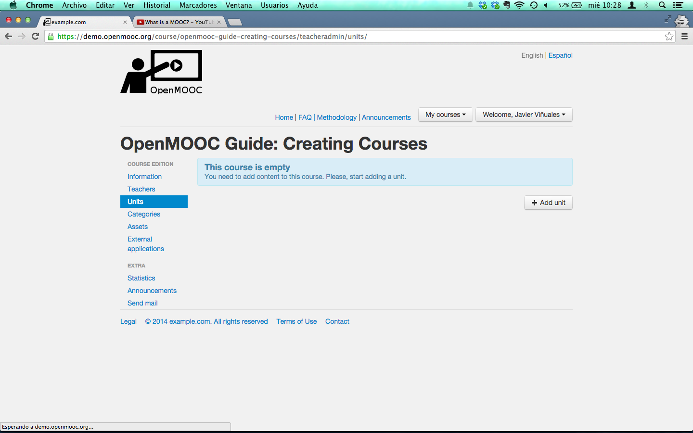Click on Add unit button and you will get a form. You have to fill the name of the Unit, the type (Normal, Homework or Exam) and a weight. We recommend leaving the weights for the end, when you have done the entire course.
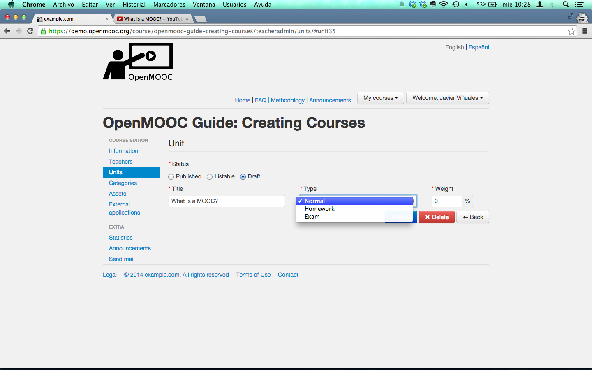You will get a succes message from the platform and finally, you have to push the save button.
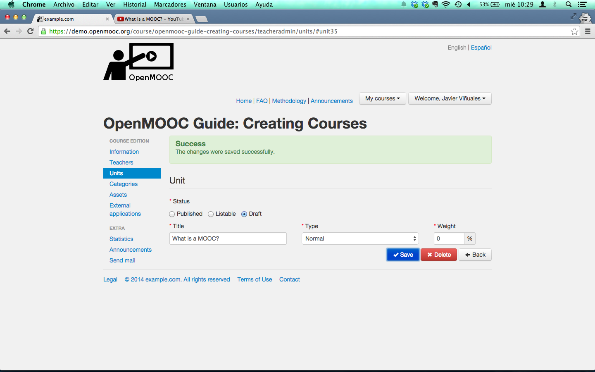 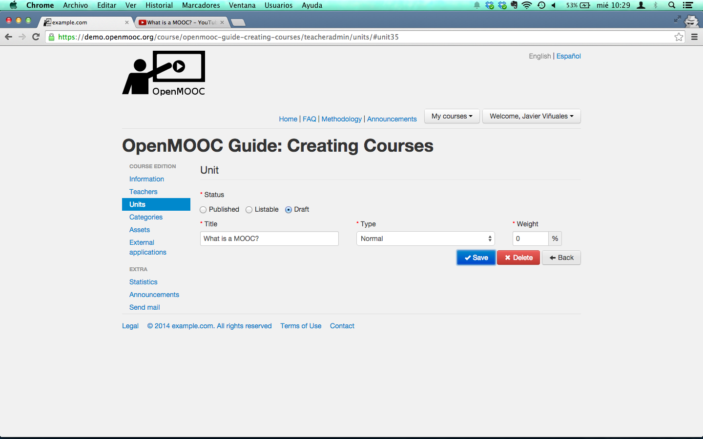An empty box with the name of the unit you just created will be shown.
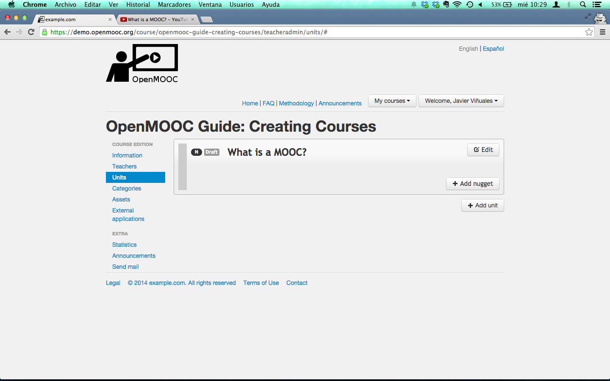Now, you need to add a pill or nugget by clicking Add nugget button. Fill the title for the pill, select the online video server to use (p.e. Youtube), copy the URL for the video resource and paste it in the Content id or url text box. Finally, fill the text areas Supplementary material and Instructor’s comments, and click save button.
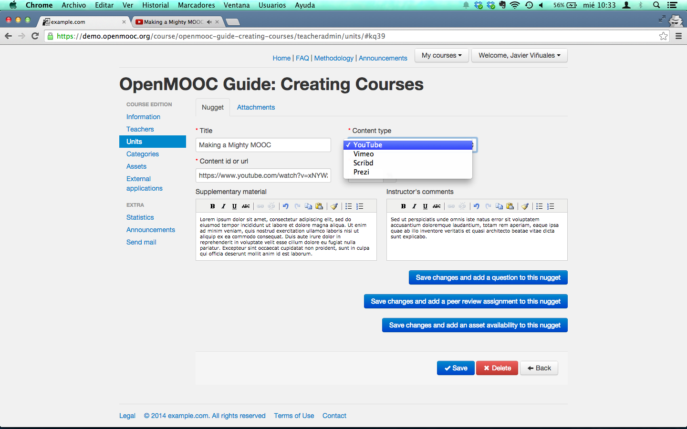Do the same and you will see two pill into the Unit.
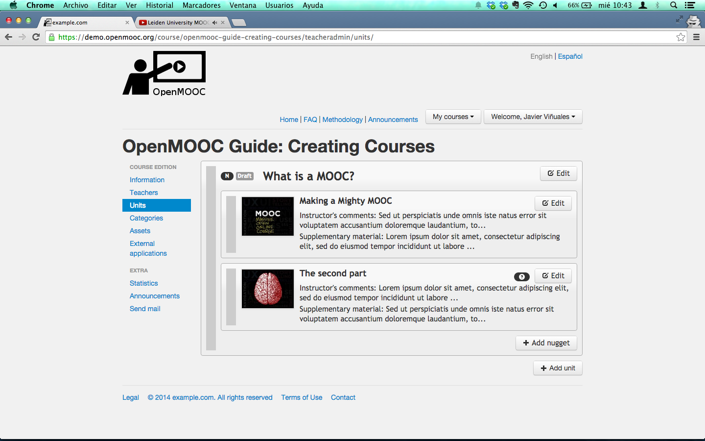To add a question to an existing pill, you have to click on the Edit button. When you get the pill form, push the Save changes and add a question to this nugget button.
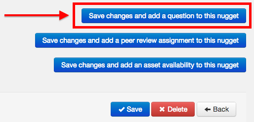The statement is always a video for a questionary, but not for peer review. You can use a blank canvas or the last frame if you’re using for the stamment a Youtube video. You have to add question’s solution like an online video (Youtube, Vimeo, Prezi or Scribd) or a text solution.
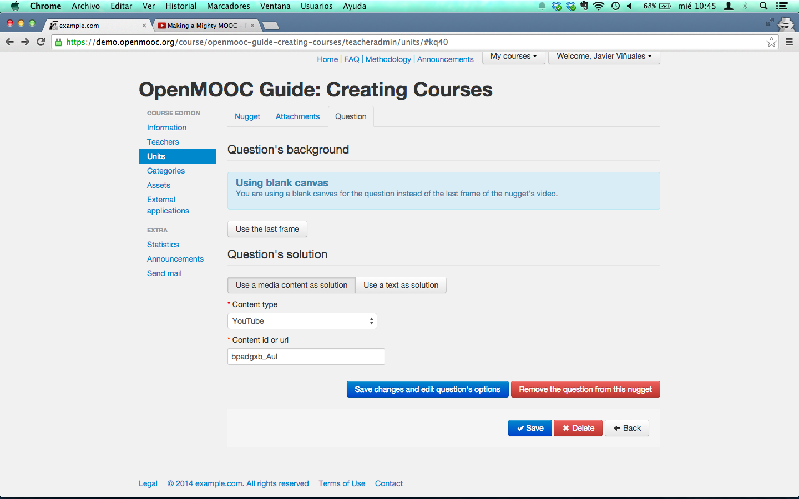OpenMOOC has a powerfull forms builder to open the possibilities of creating questions on a blank canvas or the last frame from a Youtube video. You can drag items out of the canvas form if you wish to remove. The form is automatically saved.
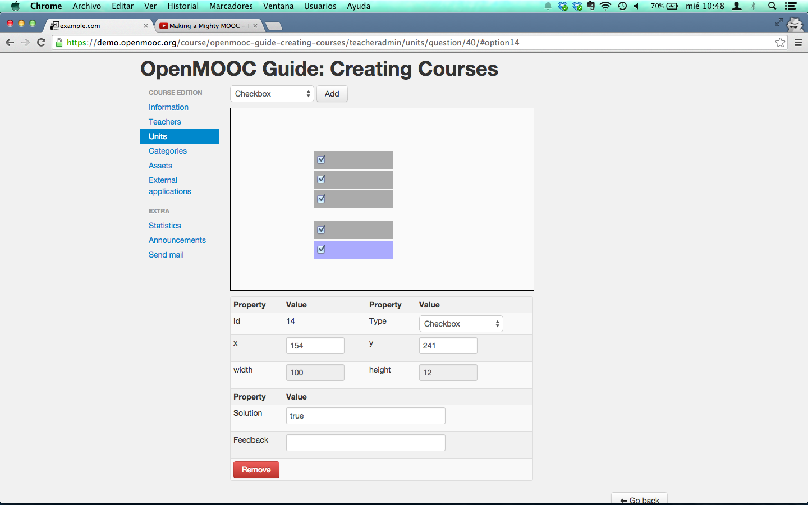To create a peer review task you have to click on the Edit button of a pill and then, click on the Save changes and add a peer review assingnment to this nugget.
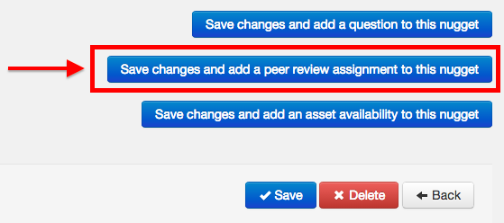You have to add an assignment description and the minimum number of reviewers needed. Every student needs to send his peer assignment and review the minimun number of assignments from others students. It’s an anonymous process.
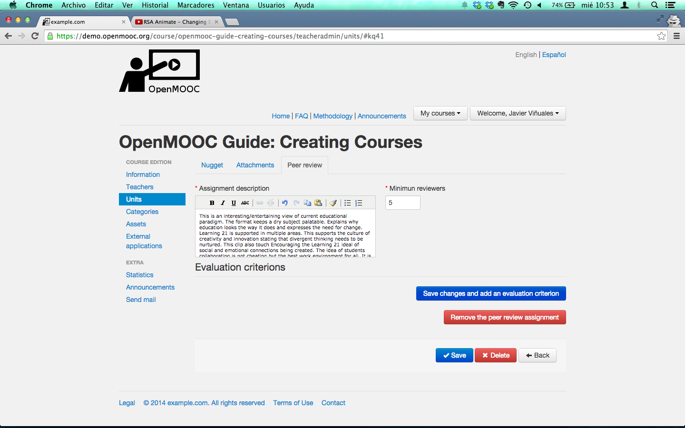Finally, you need to add some criteria to evaluate the work from other students. Every student will recieve the review tasks in a inbox into a panel named Reviews.
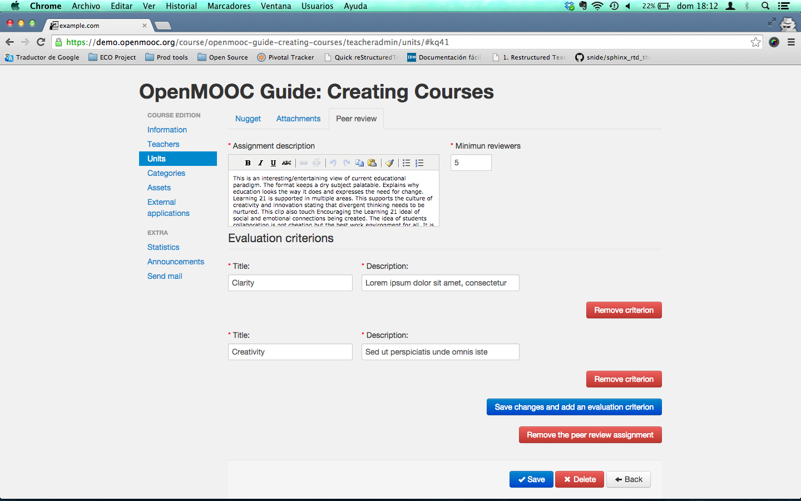This is the unit with pills you just created
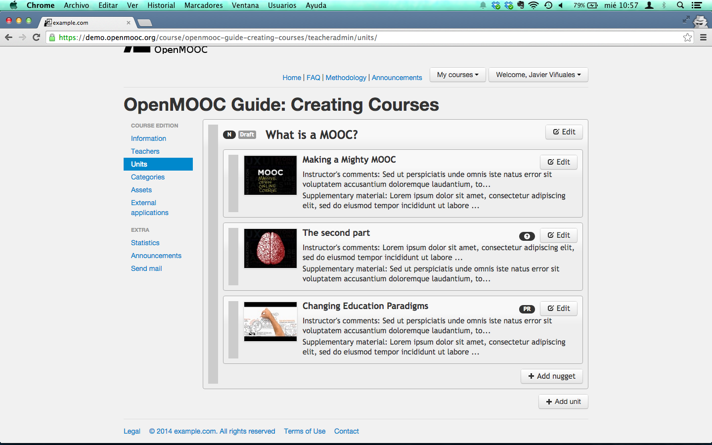